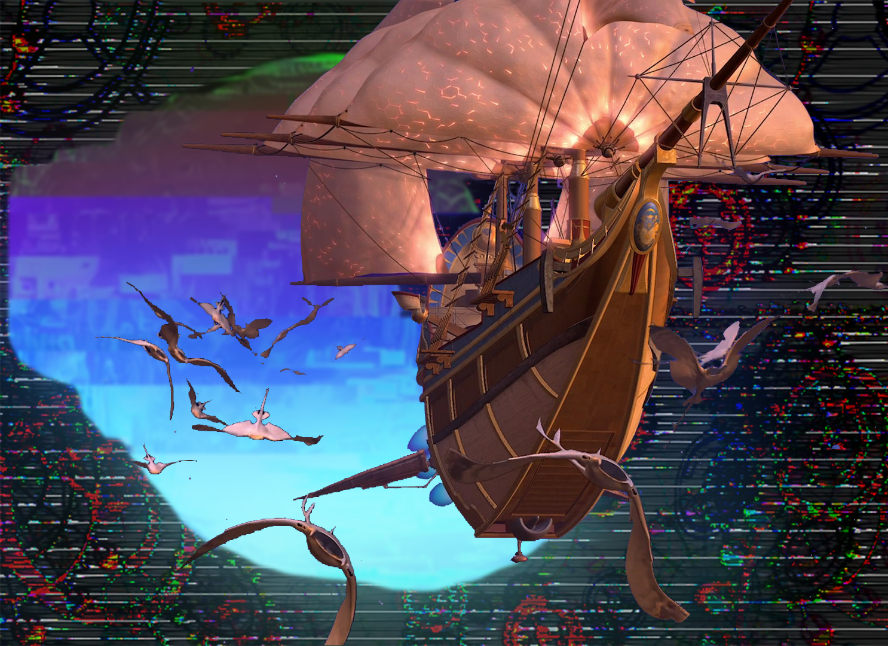

Cyber Space
Cyberspace was made from wanting to take the idea of "surfing the net" and conveying it in a picture. In the background, I used images from the digimon movie and the matrix style green text to get a base. Then, I took it all apart and got a much more satisfying glitchy effect for almost everything.